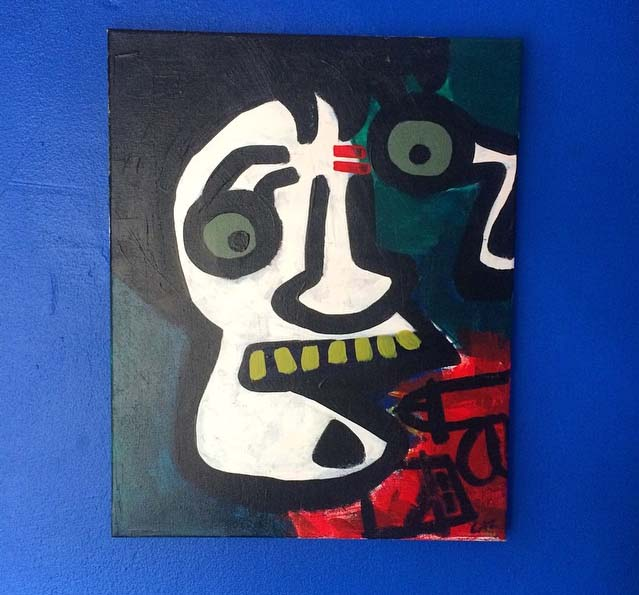

-
Guiltless Pleasure
by Lazzlo Jenkins on July 1, 2015
Guiltless Pleasure, 2015
-
push / pull
by Catch Business on July 1, 2015
inspired as you sleep
i can’t contain this
heart next to yours
your music matches my outfit
and we go together
like a pair of socks i’m missing
you are what i wanted
and what i’ll regret giving up
spent too much time
memorized in movements
like pulling the door
open at the bank
taking out money to spend
on each other instead of
our futures we see in one self
and maybe it sounds cheesy
or maybe they’ll get jealous
by the many times each day
you push contents thru me
-
Sweet Dreams
by Joe Nicholas on July 1, 2015
I have these dreams where a fungus
takes over all of our minds.
You know you're doomed
when you smell strawberry
shortcake. Within minutes
it bursts through your eyes.
By then you can't feel it,
but you still have
an idea
of what's happening. And that stays, although
the idea slowly changes
to one
simple notion:
expand.
-
Wasteland
by BAGHEERA on July 1, 2015
-
Tangled
by Odjoveno on July 1, 2015
We are in a locomotive television.
Our head is heavy of the phosphors.
Glitch spills on our tongue.
Vases are going off the rails, blue cells, sick berries.
Endlessly in speed, our hands off the wheel.
Rotten, hulled in our own battling skin,
discordantly beaten throughout our membrane.
Insane, swiped under stumps.
Blackened spew forked our third eye blind.
Hooked to the screw of pills murmuring us to keep calm.
Dying inside trying, can't walk in the open
because it is already too late.
Shredded to worn, almost choking in the swarming
dead gore germs from our own mouths.
Our house has become a wolf hole.
Feasting on cold bodies blue,
eating the faces off of the unmindful.
Our feet in the gruel of grey maggots, black cadavers
and soft sad tissues.
We are tricked, taken for a ride whenever
we are to transpire tiredness from this horrid immoral reality.
Nutmeg scattered on our nerves.
We are too close to the television, our hair roots are dull. Tangles sea coral through our head.
Witnessing our own self into the suction to not turn it off.
We are in a locomotive television.